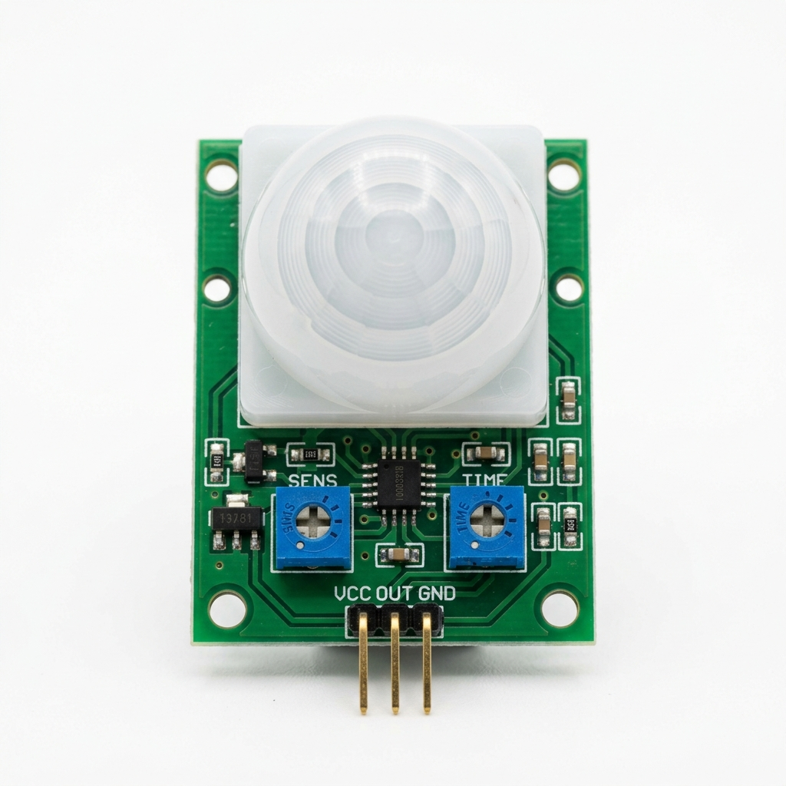

PIR HC-SR501
Categoria: Movimento / Presença
Conceito
O PIR (Passive Infrared) é um sensor capaz de detectar o movimento de pessoas, animais ou objetos que emitem radiação infravermelha (calor) dentro de seu campo de visão.
Princípio de Funcionamento
Todo corpo com temperatura acima do zero absoluto emite calor em forma de radiação infravermelha. O PIR possui cristais piroelétricos que geram energia quando expostos ao calor. Uma lente Fresnel (a cúpula branca) divide a área de detecção; quando um corpo quente passa de uma zona para outra, a variação térmica gera um pulso digital que acusa o movimento.
Principais Especificações Técnicas
- Tensão de operação: 4.5V a 20V DC
- Consumo de corrente: < 50uA
- Distância de detecção: Ajustável entre 3 e 7 metros
- Ângulo de detecção: < 110 graus
- Tempo de atraso (Delay): Ajustável de 5s a 200s
Aplicações Industriais ou IoT
Sistemas de segurança perimetral, alarmes de intrusão, ativação automática de iluminação em corredores e banheiros e contagem básica de acesso.
Exemplo em um Projeto
Alarme IoT Anti-intrusão: Instalado em um armazém. À noite, se o PIR detectar calor em movimento, ele envia um sinal para o ESP32, que por sua vez manda um alerta via MQTT (nuvem) diretamente para o smartphone do supervisor e dispara uma sirene no local.